la semana santa es la conmemoración anual cristiana de la Pasión,Muerte y Resurreción de Jesús de Nazaret.Por eso es un periodo de intenza actvidad liturgica dentro de las diversas confesiones cristiabas
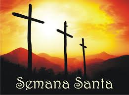
Da coomienzo el Domingo de Ramos y finaliza el Domingo de Resurreción
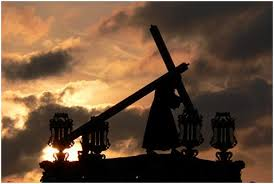La Semana Santa va procedida por la Cuaresma,que finaliza en la Semana de Pasión donde se celebra la Eucaristiía en el Jueves Santo,se conmemora la crucifixión en la Vigilia Pascual durante la noche del Sábado santo al Domingo de Resurreción.
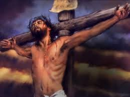El domingo de Semana Santa es el primer domingo después del día 14 del mes lunar(la luna llena nominal) que cae en o despues del 21 de Marzo(nomonialmente el día del equinocio de primavera).
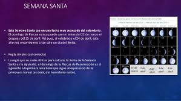 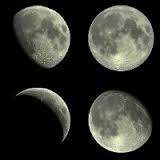Celebramos la entrada triunfal de Jesús a Jerusalén en la que todo el pueblo lo alaba como rey con cantos y palmas.Por esto,nosotros llevamos nuestras palmas a la Iglesia para que los vendigan ese día y participamos en la misa.
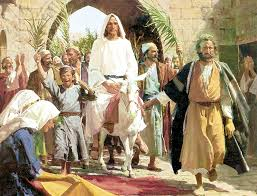Este día recordamos la ultima cena de Jesús con sus apóstols en la que les lavo los pies dando un ejemplo de servecialidad.En la ultima cena de Jesús se quedó con nosotros en el pan y en el vino,nos dejo su cuerpo y su sangre.Es el jueves santo cuando instituyó la Eucaristía y el Sacerdocio.Al terminar la Ultima cemna,Jesus se fue a orar al Huertyo de los Olivos.Ahí pasó toda la noche y despues de mucho tiempo de oración llegaron a aprenhenderlo.
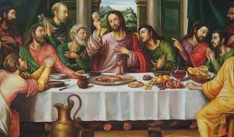Ese día recordamos pasión de Nuestro Señor:su prisón,los inteerogatorios de hERODES Y Pilato;la falgelación, la coronación de espinas y la crucifixion.Lo conmemoramos con un Via Crucis solemne y con la ceremonia de la adoración de la Cruz
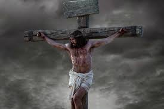Se recuerda el día que pasó entre la muerte y la Resurreción de Jesús.Las imágenes se cubren y los sagrarios están abiertos.Por la noche se lleva acabo una Vigilia pascual para celebrar la Resurreción de Jesús.Vigilia quiere decir" la tarde y noche anterioresa una fiesta"En esta celebración se acostumbra dendecir el agua y encender las velas en señal de la Resurreción de Cristo,la gran fiesta de los católicos.
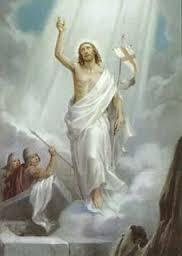Es el día más importante y más alegre para todos nosotros,los católicos, ya que Jesús vencio a la muerte y nos dio la vida.Esto quiere decir que Cristo nos da la oportunidad de salvarnos, de entar al Cielo y vivir siempre felices en compañia de Dios.Pascua es el paso de la muerte a la vida.
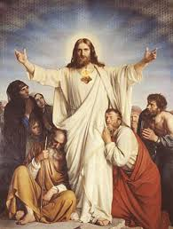El Via crucis en Alixco reúne desde hace Más de un siglo en Semana Santa un grupo de penitentes capaces de traspasar un umbral de dolor por su devoción ,al salir en procesión encapuchados y descalzos,con grilletes y coronas de espinas
Las principales calles de este monicipio se cubren con alfombras decorativas elaboradas con serrín de colores en un recorrido de cinco kilómetros que comienza en el exconvento de San francisco
Con un paso lento y quejumbroso cientos de hombres semidesnudos y encadenados caminan en busca del perdón divino através del dolor.
Arrastran pesadas cadenas que aveces superan los 100 kilos, con la cara tapada y una corona de espinas.
En el pecho,los brazos ,las piernas y la espalda se clavan más espinas que una semana antes van a buscar descalzos a un cerro cercano.
La cual es realizado por la cofradia de Nazarenos de la entidad y la procesión de engrillados;cabe mencionar que ambos eventos son actos de penitencia,fe y de arrepentimiento.
Personas de otros estados vecinos vienen a admirar el tapete monumental de flores de primavera el cual fue hecho con más de 160 mil plantas y con imagenes alusivas a esta temporada de Semana Santa.
Es cuadragesimo día(antes de la pascua) es el tiempo liturgico del calendario cristiano destinado a ala preparación espiritual de la fiesta de la pascua.Se trata de un tiempo de purificación e iluminación celebrada en la iglesia catolica ortodoxa,anglicana y buana parte de las iglesias protestantes(incluyendo unas evangelicas).
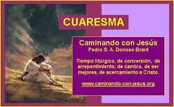 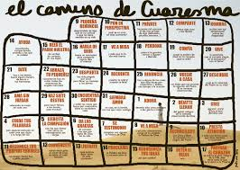
Los miembros de esta religión celebran la Cena del Señor con pan sin levadura y vino en sus congregaciones.A esta fracción del pan sólo puede acercarse a las personas ungidas-segun sus escritos-aquellos que tengan la esperanza de ir al Cielo.
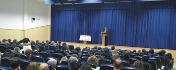que no creen en Jesús como su Salvador,celebran el matza, una cena que consiste en hierbas con sabor amargo y pan sin levadura(acimo) en forma de galleta.El sabor amargo recuerda a la esclavitud que vivio el pueblo de Israel ante los egipcios;b y el pan sin levadura,según las escrituras biblicas,simboliza la humildad de esta comunidad
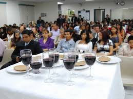Ellos no conmemoran a la muerte de Jesús sino su resurreción.En estos días hacen reuniones para recordar la noche de la entrega de Cristo y para conmemorar la resurreción.Se agregan en una jornada de oración y adoración.En esta reunión se dan cita grupos artísticos y musicales ya que los cristianos creen que "Dios habita ern medio de la alabanza"
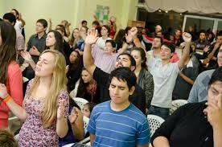En el senrtir de los edventistas, la Semana Santa es la conmemoración de la pasión de Cristo:sin embargo,los sesis días los trabajan normalmente,además no tienen prohibición de ingerir alimentos aunque tienen a ser vegetarianos.
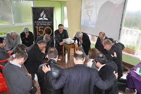